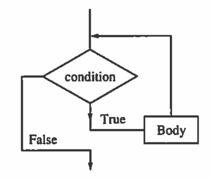

Ken Levasseur, Al Doerr, Michiel Smid, Oscar Levin, Charles M. Grinstead, J. Laurie Snell, Eric Lehman, F. Thomson Leighton, Albert R Meyer, Jeff Erickson, Kenneth P. Bogart, Carol Chritchlow, David Eck, OpenDSA Project, L.J. Miller
Computer programs, bicycle assembly instructions, knitting instructions, and recipes all have several things in common. They all tell us how to do something; and the usual format is as a list of steps or instructions. In addition, they are usually prefaced with a description of the raw materials that are needed (the input) to produce the end result (the output).
We use the term algorithm to describe such lists of instructions. An algorithm is an explicit, precise, unambiguous, mechanically-executable sequence of elementary instructions, usually intended to accomplish a specific purpose. For example, here is an algorithm for singing that annoying song 99 Bottles of Beer on the Wall, for arbitrary numbers of bottles:
Algorithm9.1.1.BottlesOfBeer.
procedure BottlesOfBeer.
(\(n\text{:}\) number of bottles)
For i := n down to 1:
Sing: “i bottles of beer on the wall, i bottles of beer,”
Sing: “Take one down, pass it around, i − 1 bottles of beer on the wall.”
Sing: “No bottles of beer on the wall, no bottles of beer,”
Sing: “Go to the store, buy some more, n bottles of beer on the wall.”
The word “algorithm” is a corruption of the name of the 9th century Persian mathematician Muhammand ibn Musa al-Khwarizmi. Although they have been a topic of formal academic study for only a few decades, algorithms have been with us since the dawn of civilization. Descriptions of step-by-step arithmetic computation are among the earliest examples of written human language, long predating the works of al-Khwarizmi.
The most familiar method for multiplying large numbers, at least for American students, is the lattice algorithm. This algorithm was popularized by the medieval Italian mathematician and tradesman Leonardo of Pisa, better known as Fibonacci, in his 1202 book Liber Abaci. Fibonacci learned it from Arabic sources including al-Khwarizmi who in turn learned it from Indian sources, who may have learned it from Chinese sources. The oldest surviving descriptions of the algorithm appear in The Mathematical Classic of Sunzi, written in China between the 3rd and 5th centuries, and in Eutocius of Ascalon’s commentaries on Archimedes’ Measurement of the Circle, written around 500ce, but there is evidence that the algorithm was known much earlier.
Subsection9.1.1Describing Algorithms
The skills required to effectively design and analyze algorithms are entangled with the skills required to effectively describe algorithms. A complete description of an algorithm has four components:
What:
A precise specification of the problem that the algorithm solves.
How:
A precise description of the algorithm itself.
Why:
A proof that the algorithm solves the problem it is supposed to solve.
How fast:
An analysis of the running time of the algorithm.
This section and the next will demonstrate ways to specify and describe algorithms and then will introduce some commonly seen algorithms. In Section 9.3 we explore ways to analyze the running times of algorithms. Proving algorithmic correctness, the “why”, is covered in the second semester of Discrete Mathematics.
Most of the algorithms in this book will contain a combination of three kinds of steps: the assignment step, the conditional step, and the loop.
Subsubsection9.1.1.1Assignments
In order to assign a value to a variable, we use an assignment step, which takes the form:
\begin{equation*}
\textrm{Variable = Expression to be computed}
\end{equation*}
The equals sign in most languages is used for assignment but some languages may use variations such as := or a left pointing arrow. Logical equality, which produces a boolean result and would be used in conditional or looping steps, is most commonly expressed with a double-equals, ==.
An example of an assignment is k = n - 1 which tells us to subtract 1 from the value of n and assign that value to variable k. During the execution of an algorithm, a variable may take on only one value at a time. Another example of an assignment is k = k - 1. This is an instruction to subtract one from the value of k and then reassign that value to k.
Subsubsection9.1.1.2Conditional steps
Frequently there are steps that must be performed in an algorithm if and only if a certain condition is met. The conditional or "if ... then" step is then employed. For example, suppose that in step 2 of an algorithm we want to assure that the values of variables x and y satisfy the condition x <= y. The following step would accomplish this objective.
2. If x > y:
2.1 t = x
2.2 x = y
2.3 y = t
Listing9.1.2.An if/then conditional step.
Steps 2.1 through 2.3 would be bypassed if the condition x > y were false before step 2.
One slight variation is the "if ... then ... else" step, which allows us to prescribe a step to be taken if the condition is false. For example, if you wanted to exercise today, you might look out the window and execute the following algorithm.
1. If it is cold or raining:
exercise indoors
else:
go outside and run
2. Rest
Listing9.1.3.An if/then/else conditional step
Subsubsection9.1.1.3Loops
The conditional step tells us to do something once if a logical condition is true. A loop tells us to repeat one or more steps, called the body of the loop, while the logical condition is true. Before every execution of the body, the condition is tested. The following flow diagram serves to illustrate the steps in a while loop.

Figure9.1.4.Flow diagram for a while loop
Suppose you wanted to solve the equation \(f(x) = 0\text{.}\) The following initial assignment and loop could be employed.
1. c = your first guess
2. While f(c) != 0:
2.1 c = another guess
Listing9.1.5.A While loop
Caution: One must always guard against the possibility that the condition of a While loop will never become false. Such "infinite loops" are the bane of beginning programmers. The loop above could very well be such a situation, particularly if the equation has no solution, or if the variable takes on real values
In cases where consecutive integer values are to be assigned to a variable, a different loop construction, a For loop, is often employed. For example, suppose we wanted to assign to variable k each of the integer values from m to n and for each of these values perform some undefined steps. We could accomplish this with a While loop:
1. k := m
2. While k <= n:
2.1 {execute some steps}
2.2 k = k + l
Listing9.1.6.A While loop from \(m\) to \(n\)
Alternatively, we can perform these steps is with a For loop.
For k = m to n:
{execute some steps}
Listing9.1.7.A For loop from \(m\) to \(n\)
For loops such as this one have the advantage of being shorter than the equivalent While loop. The While loop construction has the advantage of being able to handle more different situations than the For loop.
Subsection9.1.2The Factorial Algorithm
Functions and algorithms are two very closely related ways to represent processes. In fact, many programming languages use the word function to denote a block of code that defines an algorithm.
The notation \(f(n) = n!\text{,}\) denotes the factorial function. Further explanation is needed to define the process of calculating \(n!\text{,}\) such as: where \(n! = n * (n-1) * ... * 2 * 1\) and \(n\) is a non-negative integer. The factorial algorithm describes step-by-step instructions for calculating \(n!\) when given \(n\) as input.
Algorithm9.1.8.Factorial.
procedure Factorial.
(\(n\text{:}\) non-negative integer)
prod \(: = 1\text{:}\)
if\(n = 0\text{:}\)
return 1
else:
for i := n down to 1
prod := prod * i
return prod
Subsection9.1.3Some Common Algorithms
Two tasks that many algorithms have been developed for are searching and sorting on a list of items. This section introduces a few of the more common of these types of algorithms. Additionally, we will discuss a few algorithmic paradigms, different approaches to solving problems algorithmically.
Subsubsection9.1.3.1Search Algorithms
The search task involves looking for a particular item in a list of items.
Linear Search.
The linear search algorithm must have a list of items \(\{a_1, a_2, \ldots, a_n\}\) and the target item \(x\) as inputs. There are several ways to format the output, but commonly the output is the target item’s location in list if it is found, or some indicator value such as \(0\) or \(-1\) if the target is not found in the list. Linear Search is an example of a “brute force algorithm”, it approaches the problem in the most direct way possible, without no attempt at improving efficiency.
The algorithm starts from the beginning of the list of items and compares each item to the target, counting the items as it goes. If the list item is the same as the target item, then the location variable is updated with the count. When it gets to the end of the list, it outputs the value in the location variable.
Let \(x\) be the item to look for and \(\{a_1, a_2, \ldots, a_n\}\) be the list of items to search.
First, compare \(x\) with the first item \(a_1\text{.}\)
If \(x\) and \(a_1\) are equal, set location to 1.
Else, compare \(x\) with the second item \(a_2\)
If \(x\) and \(a_2\) are equal, set location to 2.
Continue until the whole list has been scanned.
Return location value or 0 if no match was found.
Algorithm9.1.9.Linear Search.
procedure linear search.
(\(x\text{:}\) target; \(\{a_1, a_2, ..., a_n\}\text{:}\) list of items)
index := 1
location := 0
while index \(\leq\) n
if\(x = a_{index}\)
then loc := index
index := index + 1
return loc
We can make the linear search algorithm more efficient by modifying the loop condition so that the whileloop will stop if the target item is found. This eliminates having to continue to compare items if a matching one has been seen.
Algorithm9.1.10.Smarter Linear Search.
procedure faster linear search:.
(\(x\text{:}\) target; \(\{a_1, a_2, ..., a_n\}\text{:}\) list of items)
index := 1
location := 0
while (index \(\leq\) n) and (\(x \neq a_{index}\))
index := index + 1
if index \(\leq \) n
then loc := index
return loc
In the following implementation of the Faster Linear Search in SageMath, we search within a randomly generated list of integers.
Maximum Element.
Linear Search can be modified to find an item in a list with a specific property. For example, we can modify the algorithm to find the largest item in the list, rather than a specific item of our choosing. To do this we must change how the algorithm compares elements.
The algorithm for finding the maximum element in a list starts from the beginning of the list of items. It compares the first two items and keeps the larger one, then it compares that to the third item again keeping the larger, this continues through the entire list. When it gets to the end of the list, it outputs the value that it has saved. This must be the maximum element in the list.
Let \(max\) be the largest item seen so far and \(\{a_1, a_2, \ldots, a_n\}\) be the list of items to search.
First, set \(max\) to the value of the first item, \(a_1\text{.}\)
Then compare \(max\) with the second item, \(a_2\text{,}\) if \(a_2\) is larger, set \(max = a_2\text{.}\)
Next, compare \(max\) with the third item, \(a_3\text{,}\) if \(a_3\) is larger, set \(max = a_3\text{.}\)
Continue until the whole list has been scanned.
Return the value of \(max\text{.}\)
Algorithm9.1.11.Maximum Element in a List.
procedure maximum element:.
(\(\{a_1, a_2, ..., a_n\}\text{:}\) list of items)
index := 1
maximum := \(a_1\)
while index \(\leq\) n
if maximum \(\leq a_{index}\)
then maximum := \(a_{index} \)
index := index + 1
return maximum
In the following implementation of the Maximum Element in SageMath, we find the maximum of a randomly generated list of integers.
Binary Search.
The binary search algorithm is a much more efficient way to search for an item in a list than linear search, however, the list to be searched must be put into a sorted order before searching can be done. Binary search is an example of a “divide-and-conquer” algorithm where the problem is repeatedly divided into smaller problems until solving the problem is very easy. We will come back to see the recursive version of Binary Search in Section 9.2 on recursive algorithms. Here we describe the iterative, or looping, version.
The binary search algorithm starts by comparing the item in the middle position of the sorted list to the target. If the middle item is the same as the target item, then the location is returned. If the target is larger than the middle item, the lower half of the list is disregarded, the middle becomes the new start of the list and the target is compared to the item halfway between the new start and the end. If the target is smaller than the middle item, the upper half of the list is disregarded, the middle becomes the new end of the list, and the target is compared to the item halfway between the beginning and the new end. This procedure continues until the target is found or the list is reduced to a single item and that doesn’t match the target.
Algorithm9.1.12.Iterative Binary Search.
procedure binary search.
(\(x\text{:}\) target; \(\{a_1, a_2, ..., a_n\}\text{:}\) sorted list of items)
loc := -1
begin := 1
end := n
found := FALSE
while (begin \(\leq\) end) and (not found)
mid := (begin + end) / 2
if\(x = a_{mid}\)
then loc := mid
found := TRUE
else if\(x < a_{mid}\)
then end := mid - 1
else
begin := mid + 1
return loc
In the following implementation of the Iterative Binary Search in SageMath, we search within a sorted list of integers.
Subsubsection9.1.3.2Sorting Algorithms
The sorting task involves rearranging a list of items into a sorted order. The development of efficient sorting algorithms has been an important part of theoretical computer science for many years, and there are many different sorting algorithms. In this section we introduce two of the simpler “brute-force”sorting algorithms.
Bubble Sort.
Bubble sort is very simple. It runs through the list to be sorted several times, comparing neighboring pairs of items. If the first item is larger than the second, they swap places. Then it moves forward and compares the next pair, and so on. This causes the largest item in the list to “bubble down” to its correct sorted position at the end of the list in the first pass through to list. In the next pass through the list, the second largest item will end up in its correct sorted position (second from the end). In the third pass, the third largest item will be in its sorted position, and so on. Each time the algorithm passes through the list, it can stop looking for swaps sooner, when it gets to the previously placed items. The algorithm has to make almost as many passes through the list as there are items in it. In each pass execept the last, only one item is guaranteed to be put into its correct position. In the final pass, the last two smallest items are correctly placed because there are only two positions left at that point. The algorithm finishes after making \(n-1\) passes through the list, if \(n\) is the length of the list it sorted.
Algorithm9.1.13.Bubble Sort.
procedure bubble sort.
(\(\{a_1, a_2, ..., a_n\}\text{:}\) list of items)
end := n
for (i = 0 to (end - 1))
for (j = 0 to (end-i-1))
if\(a_j > a_{j+1} \) swap them
return list
In the following implementation of Bubble Sort in SageMath, we sort a randomized list of integers.
Insertion Sort.
Insertion sort works by keeping the list it is sorting in two sections, sorted and unsorted. It starts with the just the first item in the list as the sorted part and the whole rest unsorted. It then puts the second item in sorted order with the first by swapping places if the second is smaller than the first. Now the sorted part is two items long and the rest is unsorted. Then it takes the third item and puts it in its correct position in the sorted part by shifting any larger items over to make room for that item. Then it moves the sorted/unsorted boundary over. This is repeated until the whole list is included in the sorted part.
Algorithm9.1.14.Insertion Sort.
procedure insertion sort.
(\(\{a_1, a_2, ..., a_n\}\text{:}\) list of items)
end := n
for (i = 1 to end)
j := i
while (j > 0) and (\(a_{j-1} > a_j\))
swap\(a_j\) and \(a_{j-1} \)
j:= j - 1
i := i + 1
return list
In the following implementation of Insertion Sort in SageMath, we sort a randomized list of integers.
Subsubsection9.1.3.3Greedy Algorithms
An optimization problem is where the task is to minimize or maximize some value over a whole range of possibilities. Problems such as finding a delivery route with the shortest mileage or making a schedule of classes using the fewest number of classrooms or predicting the most probable winner in an election are all optimization problems. These kinds of problems are hard to solve algorithmically because the number of possibilities can become unmanageable.
Greedy algorithms are one type of approach to optimization problems. A greedy algorithm doesn’t try to solve the overall problem in an optimal way, instead it makes the “best” choice it can at each step towards a solution. Often, greedy algorithms are remarkably accurate and efficient. Many optimization tasks are so difficult that a greedy algorithm is the only known way to compute an answer, as we will see in ICS 241.
Greedy Change Making Algorithm.
Say we want to develop an algorithm for an automated change machine. How can we program our machine to return any amount of change with the fewest number of coins possible? This is a simple optimization problem. We don’t want to approach this in a “brute force” manner where our machine would have to figure out all possible combinations of coins and then choose the one that requires the least coins. Instead we will use a “greedy” method.
In the greedy paradigm we want our machine to make the best choice at each step. In this case, that will mean always adding the largest value coin possible to the change without exceeding the amount remaining to return.
If the machine can hold quarters, dimes, nickels, and pennies we will make a sorted list holding their values from high to low: \(\{25, 10, 5, 1\}\) and another list holding the coin types in the same order {quarter, dime, nickel, penny}. These will be the \(c_i\) and \(t_i\) values below and \(n\) would be 4.
Algorithm9.1.15.Greedy Change Making.
procedure makeChange.
(\(x\text{:}\) change amount; \(\{c_1, c_2, ..., c_n\}\text{:}\) list of coin values; \(\{t_1, t_2, ..., t_n\}\text{:}\) list of coin types)
for (i = 1 to n)
while (\(x > c_i\))
give coin of type \(t_i\)
x := x - \(c_i\)
In the following implementation of the Greedy Change Making algorithm in SageMath the coins it would return are printed out.
Exercises9.1.4Exercises for Section 9.1
1.
Describe, in words, what the following algorithm does:
Alg1.
(\(k\text{:}\) positive integer)
\(s := 0\)
while\(k > 0\text{:}\)
\(s := s + k\)
\(k := k - 1\)
return\(s\)
Answer.
This algorithm calculates the sum of the first \(k\) positive integers: \(s = k + (k-1) + \ldots + 2 + 1\text{.}\)
2.
Describe in words what the following algorithm does:
Alg2.
(\(n\text{:}\) positive integer)
\(f := 0\)
\(k := n\)
while\(k\) is even
\(f := f + 1\)
\(k := k/2\)
return\(k\)
3.
Write in pseudocode an algorithm that finds the largest and smallest elements in a list of integers of length \(n\) and returns the sum of those two.
Answer.
LargestAndSmallest.
(\(\{a_1, a_2, ..., a_n\}\text{:}\) list of integers)
\(smallest := a_1\)
\(largest := a_1\)
\(index:= 2\)
while\(index \leq n\text{:}\)
if\(smallest \geq a_{index}\text{:}\)
\(smallest := a_{index}\)
if\(largest \leq a_{index}\text{:}\)
\(largest := a_{index}\)
\(index := index + 1\)
return\(smallest + largest\)
4.
Write in pseudocode an algorithm for finding the average of the elements in a list of integers of length \(n\text{.}\)
5.
Write a complete trace of bubble sort on the list [6, 2, 3, 1, 5, 4] showing the lists obtained at each step (each change in values of \(i \) and \(j\)).
Answer.
1.
[6 2 3 1 5 4]
Before anything happens
2.
[2 6 3 1 5 4]
\(6>2\text{,}\) so swap
3.
[2 3 6 1 5 4]
\(6>3\text{,}\) so swap
4.
[2 3 1 6 5 4]
\(6>1\text{,}\) so swap
5.
[2 3 1 5 6 4]
\(6>5\text{,}\) so swap
6.
[2 3 1 5 4 6]
\(6>4\text{,}\) so swap
7.
[2 1 3 5 4 6]
\(2<3\text{,}\) so skip. \(3>1\text{,}\) so swap.
8.
[2 1 3 4 5 6]
\(3<5\text{,}\) so skip. \(5>4\text{,}\) so swap.
9.
[1 2 3 4 5 6]
\(5<6\text{,}\) so skip. \(1<2\text{,}\) so swap.
The remaining passes won’t swap anything since the list is now sorted.
6.
Write a complete trace of insertion sort on the list [6, 2, 3, 1, 5, 4] showing the lists obtained at each step (each change in values of \(i \) and \(j\)).